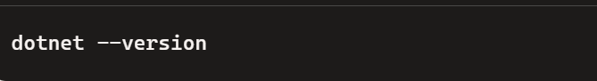
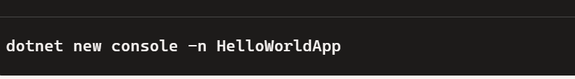
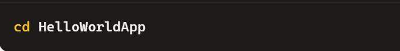
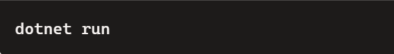
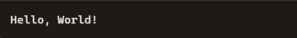

Welcome to Day 6
Here we learn about step-by-step guide to install C#,create a project folder, and print"Hello,World!" in your console application:
- Install C#(via .NET SDK):
Follow these steps to install the .NET SDK:
- Visit official site
- Download and install the latest .NET SDK for your operating system.
- Verify the installation by opening a terminal or command prompt and typing:

If the version is displayed,you're good to go!
- Create a New Project folder:
- Open a terminal or command prompt.
- Navigate to the directory where you'd like to create your project using (cd foldername).
- Run the following command :

- A new directory named HelloWorldApp will be created in your current location.
- Inside this directory,the basic template files for a .NET console application(like Program.cs and .csproj files)will be set up.
- Navigate to the folder and run the app:
- Move into the project directory.

- To build and run the default"Hello,World!"program,use:

- You'll see Hello World! printed in the terminal.
